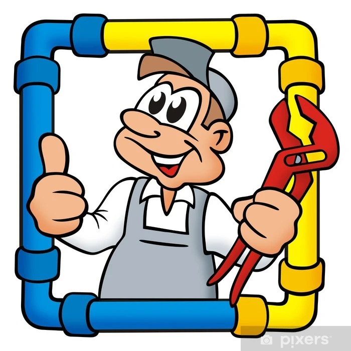
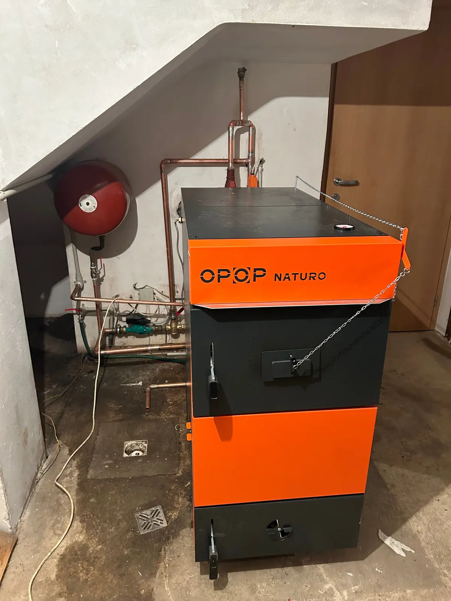
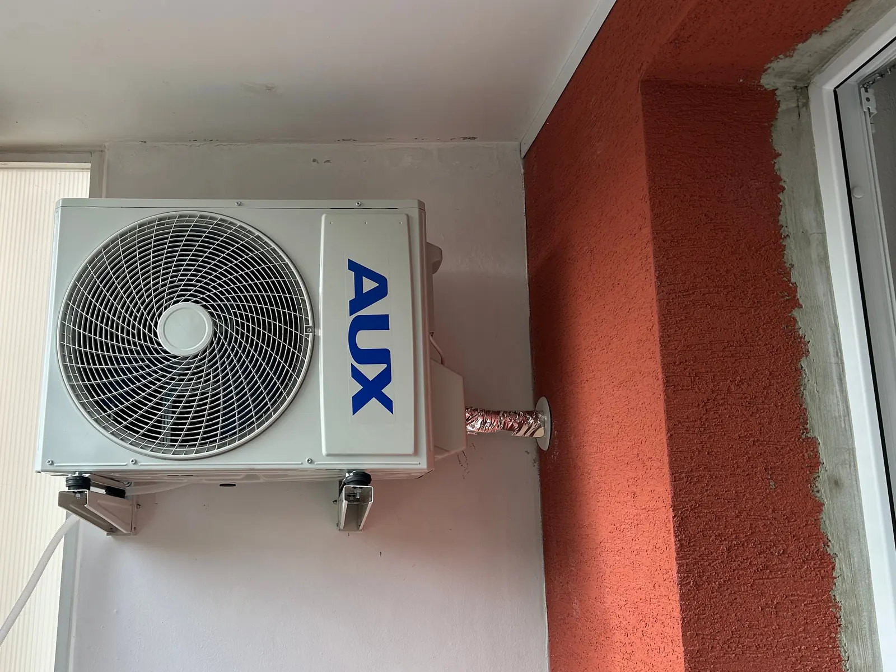
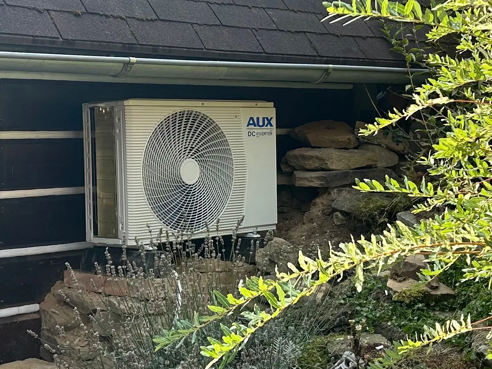
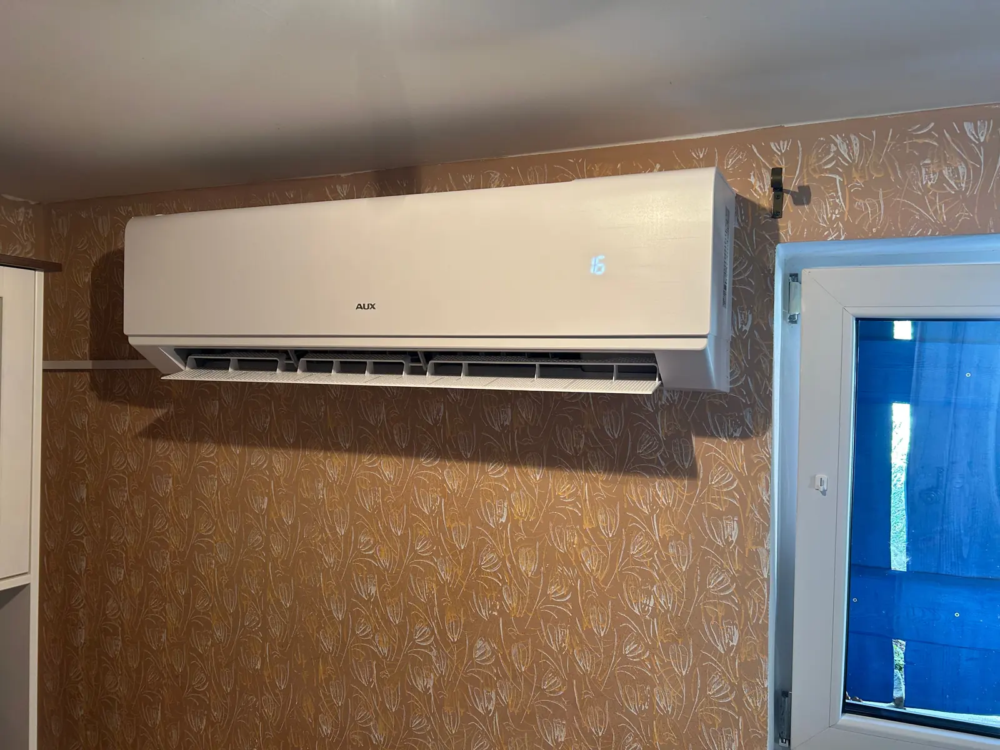
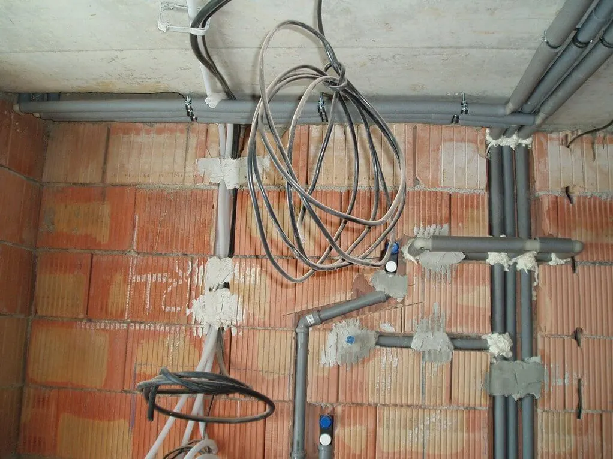

Vodoinstalatérství
Rozvody vody a odpadů, zařizovací předměty, netěsnosti a ucpané odpady.
- Výměna a oprava baterií
- Protékající a ucpané WC
- Umyvadla, vany, sprchové kouty
- Rozvody vody a odpadů
- Výměna bojleru
Opravy a montáže vody a topení, klimatizace, hodinový manžel okolo domu. Přijedu, práci si na místě prohlédnu a řeknu cenu předem — teprve potom se pustím do díla.

Čtyři okruhy prací, se kterými se na mě lidé obracejí nejčastěji. Nejste si jistí, kam vaše práce patří? Zavolejte a zeptejte se.
Rozvody vody a odpadů, zařizovací předměty, netěsnosti a ucpané odpady.
Radiátory a rozvody topení — výměny, opravy a seřízení otopné soustavy.
Montáž a servis ve spolupráci s partnerskou firmou. V létě chladí, na jaře a na podzim topí.
Práce, kvůli kterým se nevyplatí shánět tři různé řemeslníky.
Práci si nejdřív prohlédnu a řeknu vám, co bude potřeba udělat a kolik to bude stát. Kalkulace je nezávazná a zdarma — teprve když souhlasíte, pustím se do toho.
Když se domluvíme na čase, přijedu. Pokud by mě cokoli zdrželo, ozvu se předem, ne až po termínu.
Beru jako součást práce, že po odchodu zůstane byt v tom stavu, v jakém jsem ho našel — jen s opravenou vodou nebo topením.
Ke každé práci dostanete doklad. Platit můžete hotově po dokončení, nebo převodem na fakturu. Kartou bohužel ne.
Působím ve Zlínském kraji. Nejste si jistí, jestli k vám dojedu? Zavolejte, domluvíme se.
Města, kam jezdím nejčastěji: Zlín, Otrokovice, Vsetín, Valašské Meziříčí, Uherské Hradiště, Kroměříž, Uherský Brod, Rožnov pod Radhoštěm, Holešov, Luhačovice, Slavičín, Valašské Klobouky — a obce mezi nimi.
Několik zakázek, které mám vyfocené. Klimatizace jsem zajistil ve spolupráci s firmou KLIMAKOL.









Nejrychlejší je zavolat — popíšete mi, co se děje, a domluvíme termín. Když se vám nechce telefonovat, napište přes formulář.
Havárie? Zavřete hlavní uzávěr vody a volejte — nepište. Pevnou pohotovost nedržím, ale když to jde, přijedu co nejdřív. A když zrovna nemůžu, řeknu vám to hned, ať zbytečně nečekáte.